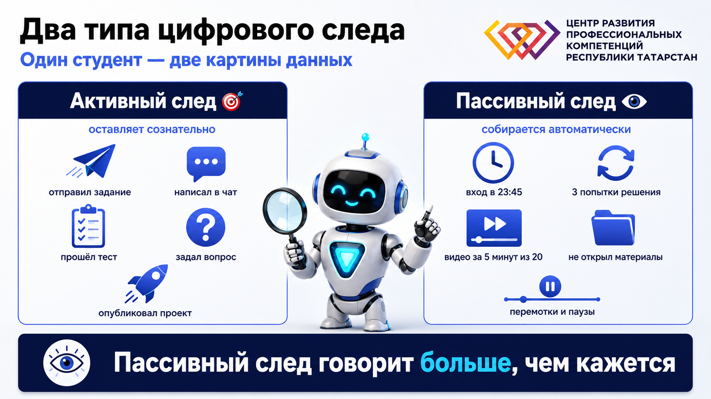
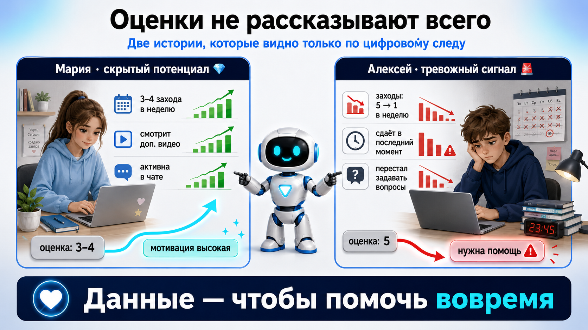
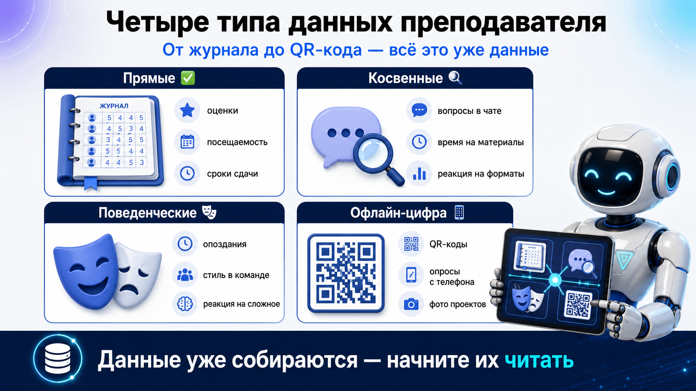
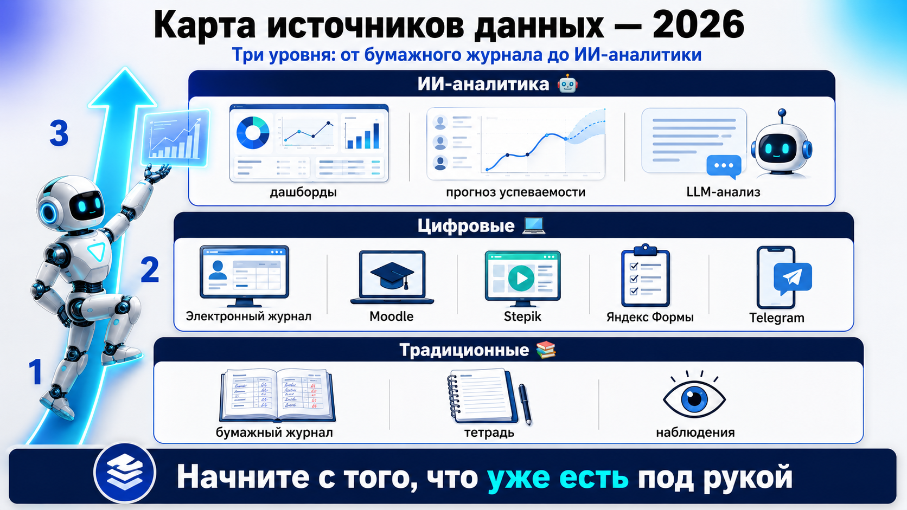
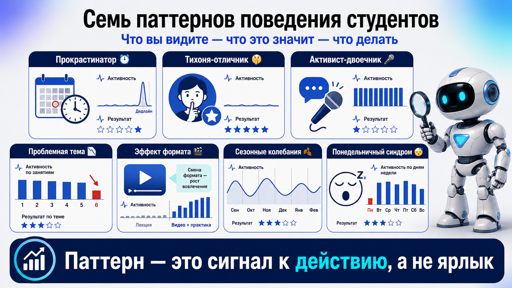
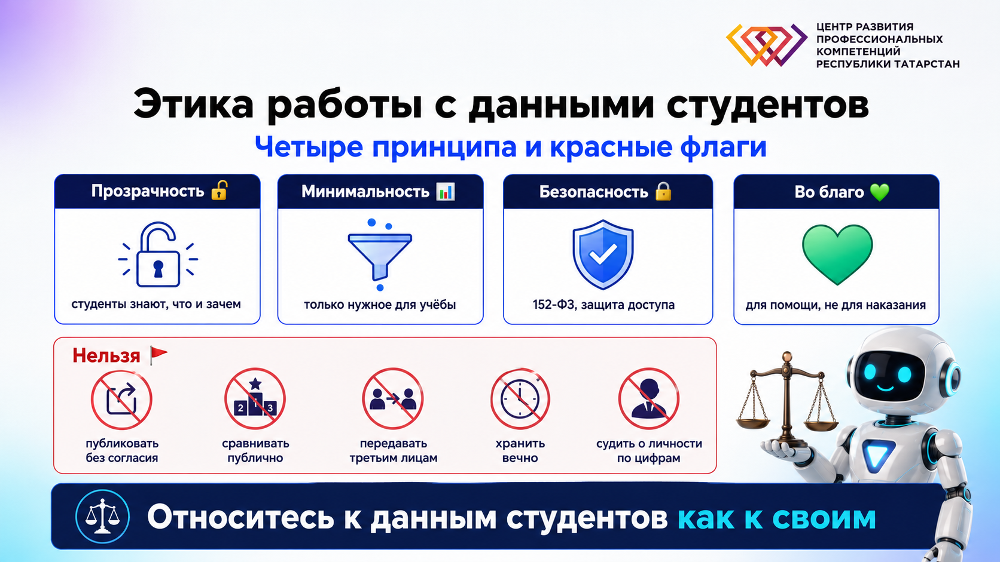

Вы уже аналитик данных
Кто опаздывает, кто сдаёт в последний момент, кто задаёт вопросы после пары — вы держите это в голове. Это и есть аналитика. Просто вы называете её интуицией, опытом, педагогическим чутьём.
Ведёте журнал успеваемости? ✋
Замечаете, кто всегда опаздывает на первую пару?
Помните, кто в группе задаёт больше всего вопросов?
Скажете, не глядя в журнал, кто сдаёт всё в последний момент?
Наша задача — перевести то, что вы делаете интуитивно, в систему: она освобождает память, помогает принимать объективные решения и показывает то, что глазом не заметно.
Что такое цифровой след: активный и пассивный
Цифровой след — совокупность данных, которые остаются после любой активности в образовательном процессе. Как следы на снегу: видно, куда шёл, как быстро, где останавливался. Активный след студент оставляет сознательно, пассивный собирается сам.

Две истории: скрытый потенциал и тревожный сигнал
Мария — «троечница» с высокой активностью: ей нужна другая подача, а не ярлык. Алексей — отличник, чей след внезапно погас: время помочь до того, как проблема станет критической. Журнал этого не покажет — след покажет.

Четыре типа данных, которые у вас уже есть
Прямые данные лежат в журнале. Косвенные требуют наблюдения. Поведенческие — это повторяющиеся паттерны. И даже офлайн-занятие оставляет цифру: QR-коды, опросы, чаты.
Прямые ✅
Факты без интерпретации: Иванов сдал 8 из 10 работ вовремя — надёжный студент. Петрова — 3 из 10: проблемы с планированием. Сидоров пересдавал 4 раза: не понимает материал или нет мотивации?
Косвенные 🔎
Требуют внимания: после видеолекций вопросов меньше, но результаты контрольной хуже. Видео создаёт иллюзию понимания — лечится вопросами каждые 5–7 минут.
Поведенческие 🎭
Повторяющиеся паттерны: студент Антон сидит в последнем ряду, молчит в дискуссиях, но пишет отличные работы и задаёт вопросы лично. Это интроверт с глубоким пониманием — не заставляйте его выступать, дайте письменные форматы.
Офлайн-цифра 📱
Даже в обычном классе: фото проектов, опросы с телефона, голосования в чате группы, QR-коды с материалами — по ним видно, кто и когда действительно открыл ссылку.

Источники данных: чек-лист инструментов 2026
Отмечайте: что уже используете, что добавить на следующей неделе. Список обновлён на 2026 год — часть привычных сервисов закрылась или ушла из России, у каждого есть работающая замена.
Кликайте по инструменту, чтобы переключать статус: ✅ использую → ⭐ добавлю → ❓ пока сложно. Отметки сохраняются в этом браузере.
Традиционные 📚
Электронные журналы
Образовательные платформы
Тесты и опросы
Коммуникация
Доски и проекты
Встроенная аналитика 🤖
Проверьте свои привычки — эти сервисы закрылись или недоступны в РФ: Google Jamboard закрыт в конце 2024 года; Miro, Notion и Trello прекратили обслуживать российских пользователей; у Kahoot и Mentimeter недоступна оплата из РФ. Quizizz теперь называется Wayground. Звонки в WhatsApp ограничены с 2025 года — для учебных групп используйте Telegram, VK или Сферум (на платформе MAX).

От наблюдений к паттернам: семь портретов
Собирать данные — полдела. Главное — видеть закономерности. Семь паттернов из практики: три индивидуальных, два групповых, два временных. У каждого — что вы видите, что это значит и что делать.

LLM — ваш аналитик данных
Встроенная аналитика платформ показывает графики. Но главный инструмент 2026 года — языковая модель: загрузите обезличенную выгрузку журнала и попросите найти паттерны. Промпт ниже готов к копированию.
Железное правило: сначала обезличить
Перед загрузкой данных в GigaChat, Алису с YandexGPT или DeepSeek замените ФИО на «Студент 1…N», удалите телефоны, почты и любые идентификаторы. Персональные данные студентов защищает 152-ФЗ, а с мая 2025 года за утечки действуют кратно увеличенные — вплоть до оборотных — штрафы. Обезличить выгрузку — минута работы; расхлёбывать утечку — годы.
Ты — аналитик образовательных данных. Вот обезличенная выгрузка по группе за 8 недель: [вставьте таблицу: оценки, даты сдачи, посещаемость, активность на платформе]. Найди: 1. Студентов с паттернами «прокрастинатор», «тихоня-отличник», «активист-двоечник» 2. Темы, где просела вся группа 3. Ранние сигналы риска: падение активности, рост времени на задания Для каждой находки укажи данные, на которых она основана, и предложи одно конкретное действие преподавателя. Если данных недостаточно для вывода — так и скажи.
Попробуйте промпт на обезличенной выгрузке своей группы: начните с одного вопроса — например, «кто в группе риска?» — и постепенно дойдёте до полного отчёта за семестр.
Этика: где границы дозволенного
Данные — для помощи студенту, а не для контроля и наказания. Четыре принципа, пять красных флагов и одно золотое правило: относитесь к данным студентов так, как хотели бы, чтобы относились к вашим.
Прозрачность 🔓
Студенты знают, какие данные вы собираете и зачем — для помощи, а не для контроля. Ничего «про запас».
Минимальность 📊
Только то, что нужно для учебного процесса. Во сколько студент лёг спать — не ваши данные.
Безопасность 🔐
Личные данные защищены, никаких общих таблиц по открытой ссылке. Помните о 152-ФЗ.
Во благо 💚
Видите проблему в следе — предложите поддержку. Никаких публичных сравнений студентов.

Чек-лист: готовы ли вы к практике
Отметьте пункты по мере готовности — прогресс сохраняется в этом браузере.
Все пункты отмечены — вы готовы к практике!
Практика 1 · «Детектив по данным» · 2,2 часа
Аудит ваших источников данных, «портреты» типичных студентов на основе реальных данных, ранние сигналы проблем.
Практика 2 · «Прогностическая аналитика» · 2,5 часа
Система «раннего предупреждения» с помощью ИИ, прогноз проблем до того, как они станут критическими, персональные рекомендации.
Проверьте себя
Пять вопросов по материалу лекции — ответьте и посмотрите разбор.
1. Студент открыл лекцию в 23:45 и «просмотрел» её за 5 минут из 20. Какой это след?
2. Мария активна в курсе, смотрит дополнительные видео, но получает тройки. О чём это говорит в первую очередь?
3. Вся группа завалила контрольную по одной теме. Где, скорее всего, проблема?
4. После видеолекций студенты задают меньше вопросов, а пишут контрольные хуже. Почему?
5. Что обязательно сделать перед загрузкой выгрузки журнала в LLM?
Отвечено: 0 / 5
Заключение: вы уже аналитик
- Цифровой след оставляет каждое действие студента — активное и пассивное
- Вы уже собираете данные каждый день — осталось делать это осознанно и системно
- Паттерны важнее отдельных цифр: сигнал к действию, а не ярлык
- LLM превращает выгрузку журнала в аналитический отчёт — но только обезличенную
- Данные — для помощи студенту: этика и 152-ФЗ — не формальность
Помните: данные без действий — просто цифры. Наша цель — использовать их для реальных улучшений в образовательном процессе. До встречи на практике!
Лекция 4.2 «Подготовка, очистка и визуализация данных» — продолжение →